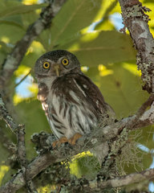

Tecolote Tamaulipeco (Glaucidium sanchezi)

El mochuelo tamaulipeco (Glaucidium sanchezi) es una especie de búho de la familia [[Strigidae, endémica de México. Es uno de los búhos más pequeños del mundo con una longitud de 13,5 cm. Sin embargo, con un peso de 53 gramos, es un poco más pesado que el mochuelo peludo y el mochuelo de los saguaros. Su hábitat natural consiste de bosque montano húmedo subtropical y tropical.
Caracteristicas
- "en peligro de extinción" en Mexico
- Es probable que presente una estrategia de historia de vida tipo K, ya que podría ser un ave relativamente longeva y con una tasa reproductiva baja.
- en Hidalgo se estimó un índice de abundancia de 0.5 individuos en 100 puntos de conteo
- Anida en cavidades de árboles, frecuentemente en agujeros viejos de pájaros carpinteros.
- Pone de dos a cuatro huevos
Haz click aqui para volver a la tabla